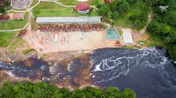
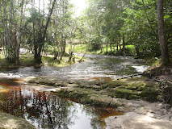

Urubuí
Localização:
À aproximadamente 850m do centro de Presidente Figueiredo, sem trilhas.
Descrição:
A corredeira Urubuí é um destino popular para famílias, oferecendo diversas opções de restaurantes e lanchonetes nas proximidades. O acesso à corredeira é gratuito e conta com a presença de salva-vidas, garantindo segurança para os banhistas. A água gelada do Urubuí proporciona uma experiência refrescante, ideal para um banho relaxante em meio à natureza exuberante.
Desafios:
No entanto, o local pode ficar bastante cheio, especialmente em fins de semana e feriados, o que dificulta a busca por tranquilidade. Além disso, a interação com vendedores que oferecem comidas e os "flanelinhas" que pedem para estacionar pode ser incômoda para quem busca sossego. A correnteza das corredeiras pode ser forte, e as pedras escorregadias exigem atenção redobrada, especialmente para crianças.
Experiência:
A experiência de visitar as corredeiras varia entre os visitantes. Enquanto alguns consideram o local perfeito para diversão em família, outros sentem que a lotação prejudica a apreciação do ambiente. Apesar das atividades recreativas e das áreas para descanso, o local não é recomendado para quem procura um momento de tranquilidade. No entanto, a experiência pode ser significativamente melhor em dias menos movimentados.
Confira os horários;
Corredeira das lajes
Localização:
À aproximadamente 6,7km do centro de Presidente Figueiredo, sem trilhas.
Descrição:
A Cachoeira das Lajes, localizada no sítio Santa Lúcia, é um local ideal para quem aprecia a natureza e busca um espaço para acampar. A região conta com corredeiras refrescantes, que proporcionam uma experiência agradável de banho, além de áreas amplas para lazer em meio à floresta amazônica. O local oferece banheiros com chuveiros, tanto masculinos quanto femininos, e a possibilidade de levar comida e bebida, com churrasqueiras disponíveis para uso dos visitantes.
Desafios:
Apesar das belezas naturais, há alguns desafios a serem enfrentados. Muitas pessoas costumam levar caixas de som grandes e não respeitam o espaço alheio, dificultando a apreciação do som da natureza. No entanto, existe uma regra que limita o uso de som até às 22h, o que permite um descanso mais tranquilo à noite. Além disso, a infraestrutura do local precisa de melhorias, como a manutenção dos banheiros e a organização das áreas comuns, que podem ficar bagunçadas.
Experiência:
Visitar a Cachoeira das Lajes proporciona uma conexão única com a natureza e um ambiente familiar, ideal para um dia de diversão com a família e amigos. Muitos visitantes destacam a tranquilidade do lugar, a beleza das corredeiras e a possibilidade de relaxar em um ambiente repleto de verde. A interação com a natureza e as atividades ao ar livre tornam a experiência memorável, mesmo que haja aspectos a serem aprimorados.